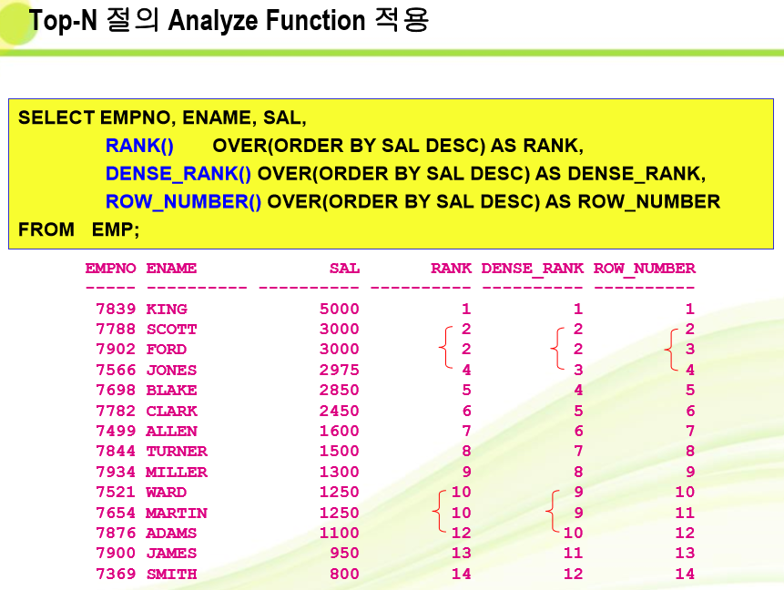

View, TOP-N, Sequence
1. View
개요
View의 개념
행과 컬럼으로 구성된 가상 테이블 (이미 존재하고 있는 테이블에 제한적으로 접근하도록 하기 위함)
물리적인 저장공간과 데이터를 가지지 않고 다른 테이블이나 뷰에서 파생된 논리적인 테이블
기본 테이블의 데이터가 변경되면 뷰에도 반영
View의 장점
뷰를 이용한 기본 테이블의 액세스 제한을 통한 데이터에 대한 보안 기능 제공
기본 테이블에 영향을 주지 않을 수 있다.
여러 개의 기본 테이블로 정의된 뷰가 하나의 테이블인 것처럼 인식
기본테이블에 대한 복잡한 형태의 질의를 뷰로 정의하여 간단하게 표현 가능.
뷰의 종류
단순뷰
하나의 테이블로 구성한 뷰
INSERT, DELETE, UPDATE와 같은 DML 명령문을 실행하여 기본 테이블의 데이터 조작 가능
함수나 그룹 데이터는 사용 가능
복합뷰
하나 이상의 기본 테이블로 구성한 뷰
DML문을 제한적으로 사용
함수나 그룹데이터는 사용 가능
View의 제한 조건
테이블에 NOT NULL로 만든 컬럼들이 뷰에 다 포함되어 있어야 된다
WITH READ ONLY옵션을 설정한 뷰는 갱신 불가
WITH CHECK OPTION을 설정한 뷰는 뷰의 조건에 해당되는 데이터만 삽입, 삭제, 수정을 할 수 있다.
뷰 생성 문법
CREATE [OR REPLACE] VIEW view_name
AS subquery
[WITH CHECK OPTION]
[WITH READ ONLY]
WITH CHECK OPTION : INSERT나 UPDATE시 서브쿼리의 조건을 만족할 경우에 처리, DELETE가능
WITH READ ONLY : 읽기 전용 뷰 생성
CREATE OR REPLACE VIEW EMPv3
AS SELECT EMPNO, ENAME, SAL, COMM, DEPTNO
FROM EMP
WHERE DEPTNO=30 WITH CHECK OPTION;
INSERT INTO EMPv3 VALUES (9999,'J',800,NULL,30); --가능
INSERT INTO EMPv3 VALUES (8889,'JJ',800,NULL,20); --VIEW에는 추가 안 되나 EMP에는 추가
예제
사원테이블로부터 부서번호가 20인 사원의 단순 뷰 생성
CREATE OR REPLACE VIEW EMPv1
AS SELECT * FROM EMP WHERE DEPTNO=20;
사원테이블로부터 부서번호가 20인 사원의 사원번호, 이름, 부서번호라는 컬럼을 가지는 단순뷰 생성.
CREATE OR REPLACE VIEW EMPv2
AS SELECT empno, ename, deptno FROM EMP WHERE DEPTNO=20;
생성된 뷰 확인은 테이블에서처럼 DESC EMPv1 SELECT * FROM EMPv1
DESC EMPv2 SELECT * FROM EMPv2
컬럼 별칭을 이용하여 뷰를 생성하면 검색할 때 지정된 컬럼 별칭을 사용한다.
CREATE OR REPLACE VIEW SALv1
AS SELECT EMPNO ID, ENAME NAME, SAL*12 YEAR_SAL FROM EMP WHERE DEPTNO=10;
SELECT ID, NAME, YEAR_SAL FROM SALv1;
부서별로 부서명, 최소급여, 최대급여, 부서의 평균 급여를 포함하는 DEPTv1을 생성하여라.
CREATE OR REPLACE VIEW DEPTv1 (NAME, MINSAL, MAXSAL, AVGSAL)
AS SELECT D.DNAME, MIN(E.SAL), MAX(E.SAL), AVG(E.SAL)
FROM DEPT D, EMP E
WHERE D.DEPTNO=E.DEPTNO
GROUP BY D.DNAME;
함수 사용시 컬럼 별명을 지정해야 한다.
CREATE OR REPLACE VIEW EMPV4
AS SELECT DEPTNO, SUM(SAL) SUMSAL, TRUNC(AVG(SAL)) AVGSAL
FROM EMP GROUP BY DEPTNO;
SELECT * FROM EMPV4;
CREATE OR REPLACE VIEW EMP_DEPT (NAME, MINSAL, MAXSAL, AVGSAL)
AS
SELECT D.DNAME, MIN(E.SAL), MAX(SAL), AVG(SAL)
FROM EMP E, DEPT D
WHERE E.DEPTNO=D.DEPTNO
GROUP BY D.DNAME;
VIEW에서 DML 연산 수행
단순 VIEW에서 DML 연산을 수행할 수 있다
VIEW가 다음을 포함한다면 행을 제거할 수 없다.
그룹함수
GROUP BY 절
DISTINCT 키워드
다음을 포함한다면 VIEW에서 데이터를 수정할 수 없다.
그룹함수
GROUP BY 절
DISTINCT 키워드
표현식으로 정의된 열
다음을 포함한다면 VIEW에서 데이터를 추가할 수 없다.
그룹함수
GROUP BY 절
DISTINCT 키워드
2. INLINE VIEW
SQL문장 내에 서브쿼리를 사용하여 생성.
문법 : SELECT column_list
FROM (Sub Query) alias
WHERE condition
급여가 2000을 초과하는 사원의 평균 급여 출력
SELECT AVG(SAL) FROM (SELECT SAL FROM EMP WHERE SAL>2000) INV_EMP;
FROM 절 상의 서브 쿼리(InLine View)
서브쿼리는 FORM 절에서도 사용 가능.
Inline View란 FROM 절 상에 오는 서브쿼리로 VIEW처럼 작용한다.
예제
각 부서에서 부서급여평균보다 높은 사원의 이름, 급여, 부서번호를 부여주는 SQL문
SELECT ENAME, SAL, DEPTNO FROM EMP E
WHERE SAL > (SELECT AVG(SAL) FROM EMP WHERE DEPTNO=E.DEPTNO);
각 부서에서 부서급여평균보다 높은 사원의 이름, 급여, 부서번호, 부서급여평균을 보여주는 SQL문.
SELECT ename, sal, deptno FROM emp e WHERE sal > (SELECT AVG(sal) FROM emp
WHERE deptno=e.deptno); -- 이것은 정답이 아니다.
SELECT A.ENAME, A.SAL, A.DEPTNO, B.SALAVG
FROM EMP A, (SELECT DEPTNO, AVG(SAL) SALAVG FROM EMP GROUP BY DEPTNO) B
WHERE A.DEPTNO=B.DEPTNO AND A.SAL>B.SALAVG;
뷰의 수정
ALTER VIEW 사용은 뷰의 수정보다 재컴파일하거나 유효성을 재검사하기 위해 사용되고
CREATE OR REPLACE VIEW 명령문을 이용한다
실제로는 기존 뷰에 대한 정의를 삭제하고 재정의
3. TOP-N 구문
(1) TOP-N질의는 컬럼의 값 중 N개의 가장 큰 값 또는 작은 값을 질의 하는 것.
(2) 문법 :
SELECT [column_list] ROWNUM -- ROWNUM은 테이블에서 읽어오는 순서
FROM
(SELECT [column_list] FROM table
ORDER BY TOP-N_column)
WHERE ROWNUM <= N;
사용 방법 : 데이터를 정렬하는 질의를 서브쿼리나 inline 뷰로 생성
필수요소 : Rownum (row 순서를 나타내는 가상컬럼)
FROM 절상의 SUB QUERY(Inline view)
Sub Query내의 Order By 절
사용가능한 비교연산자
급여 TOP-3위 출력
SELECT ROWNUM, ENAME, SAL FROM EMP;
SELECT ROWNUM, ENAME, SAL FROM EMP ORDER BY SAL;
SELECT ROWNUM, ENAME, SAL FROM EMP WHERE ROWNUM<=3;
SELECT ROWNUM, ENAME, SAL FROM EMP WHERE ROWNUM<=3 ORDER BY SAL;
SELECT * FROM EMP ORDER BY SAL DESC;
SELECT ROWNUM, ENAME, SAL FROM (SELECT ENAME, SAL FROM EMP ORDER BY SAL DESC) WHERE ROWNUM<=3;
TOP-N절의 RANK()함수 적용
SELECT EMPNO, SAL, RANK() OVER(ORDER BY SAL DESC) FROM EMP;
SELECT EMPNO, ENAME, SAL, RANK() OVER(ORDER BY SAL DESC) AS RANK FROM EMP;
SELECT * FROM (SELECT EMPNO, ENAME, SAL, RANK() OVER(ORDER BY SAL DESC) AS RANK FROM EMP);
SELECT * FROM (SELECT EMPNO, ENAME, SAL, RANK() OVER(ORDER BY SAL DESC) AS RANK FROM EMP) WHERE RANK<=3;
TOP-N 절의 Analyze Function 적용
SELECT EMPNO, ENAME, SAL, RANK() OVER(ORDER BY sal DESC) AS RANK,
DENSE_RANK() OVER(ORDER BY sal DESC) AS DENSE_RANK,
ROW_NUMBER() OVER(ORDER BY sal DESC) AS ROW_NUMBER
FROM EMP;

View Example
6~10사이의 급여 랭킹을 구하시오
SELECT ROWNUM RN, EMPNO, ENAME, SAL FROM EMP ORDER BY SAL DESC;
SELECT ROWNUM, EMPNO, ENAME, SAL
FROM (SELECT EMPNO, ENAME, SAL FROM EMP ORDER BY SAL DESC)
WHERE ROWNUM<=5;
SELECT ROWNUM, RN, EMPNO, ENAME, SAL
FROM (SELECT * FROM EMP ORDER BY SAL DESC)
WHERE ROWNUM<=10 AND ROWNUM>=6; --계속 ROWNUM이 1인거 꺼내고 6보다 크지 않으니 버린다
SELECT ROWNUM, RN, EMPNO, SAL
FROM (SELECT ROWNUM RN, EMPNO, SAL
FROM(SELECT EMPNO, SAL FROM EMP ORDER BY SAL DESC))
WHERE RN>=6 AND RN<=10;
SELECT ROWNUM, RN, EMPNO, SAL
FROM (SELECT ROWNUM RN, EMPNO, SAL
FROM(SELECT EMPNO, SAL FROM EMP ORDER BY SAL DESC))
WHERE RN BETWEEN 6 AND 10;
SELECT ROWNUM, RANK, EMPNO, SAL
FRO M (SELECT ROW_NUMBER() OVER(ORDER BY SAL DESC) AS RANK, EMPNO, SAL FROM EMP)
WHERE RANK BETWEEN 6 AND 10;
SELECT ROWNUM, RANK, EMPNO, SAL
FROM(SELECT RANK() OVER(ORDER BY SAL DESC) AS RANK, EMPNO, SAL FROM EMP)
WHERE RANK BETWEEN 6 AND 10;
SELECT ENAME, SAL, RANK() OVER(ORDER BY SAL DESC) RANK FROM EMP WHERE RANK<=5; -- WHERE 절에 alias 사용불가
SELECT ENAME, SAL, RANK() OVER(ORDER BY SAL DESC) RANK FROM EMP WHERE RANK() OVER(ORDER BY SAL DESC) <=5; --에러 다 꺼내고 RANK()함수를 수행하므로 RANK<=5를 할 수 없다
SELECT ENAME, SAL, RANK() OVER(ORDER BY SAL DESC) RANK FROM EMP;
SELECT RANK, ENAME, SAL
FROM (SELECT ENAME, SAL, RANK() OVER(ORDER BY SAL DESC) RANK FROM EMP)
WHERE RANK<=5;
순위 매기기 예제
SELECT ENAME, DEPTNO, SAL, RANK()OVER(ORDER BY DEPTNO, SAL DESC) RANK FROM EMP;
SELECT ENAME, DEPTNO, SAL, RANK()OVER(PARTITION BY DEPTNO ORDER BY SAL DESC) RANK FROM EMP; --부서번호별 순위 매김
4. View 탄탄다지기
부서별 급여합계 등수를 출력하시오(부서번호, 급여합계, 등수) - 친구출제
SELECT a.* ,ROWNUM 등수
FROM (SELECT DEPTNO, SUM(SAL) FROM EMP
GROUP BY DEPTNO ORDER BY SUM(SAL)) a;
부서명과 사원명을 출력하는 DNAME_ENAME_VU 를 작성하시오
create or replace view DNAME_ENAME_VU
as select d.dname, e.ename from emp e, dept d
where e.deptno=d.deptno;
select * from DNAME_ENAME_VU;
사원명과 직속상관을 출력하는 WORKER_MANAGER_VU를 작성하시오
create or replace view WORKER_MANAGER_VU
as select w.ename 사원명, m.ename 사수명 from emp w, emp m where w.mgr=m.empno(+);
select * from WORKER_MANAGER_VU;
사원테이블에서 사번, 사원명, 입사일을 입사일이 늦은 사원 순으로 정렬하시오.
select empno, ename, hiredate from emp order by hiredate desc;
사원테이블에서 사번, 사원명, 입사일을 입사일이 늦은 사원 5명을 출력하시오.
select empno, ename, hiredate
from (select empno, ename, hiredate, rank() over(order by hiredate desc) rank from emp)
where rank<=5;
select empno, ename, hiredate
from (select empno, ename, hiredate, row_number() over(order by hiredate desc) rank from emp)
where rank<=5;
select empno, ename, hiredate
from (select * from emp order by hiredate desc)
where rownum>=5;
사원 테이블에서 사번, 사원명, 입사일을 입사일이 6번째로 늦은 사원부터 10번째 사원까지 출력.
SELECT rank, empno, ename, hiredate
from (select empno, ename, hiredate, row_number() over(order by hiredate desc) rank from emp)
where rank between 6 and 10;
select rn, empno, ename, hiredate
from (select rownum rn, a.* from (select * from emp order by hiredate desc) a)
where rn between 6 and 10;
select rn, empno, ename, hiredate
from (select rownum rn, empno, ename, hiredate from (select * from emp order by hiredate desc))
where rn between 6 and 10;
5. Sequence
(1) 시퀀스의 정의 : 순차적인 번호를 자동으로 생성하는 객체로 테이블과 독립적으로 생성 및 저장 가능.
(2) 특징
시퀀스에서 생성되는 번호는 유일하기 때문에 기본 테이블에서 인조 Primary Key 생성시 주로 사용
여러 테이블에 의해 공유도 가능.
시퀀스는 테이블과 관계없이 생성, 저장. 오라클 내부 루틴에 의해 발생되고 증가, 감소된다.
(3) 문법 : CREATE SEQUENCE sequence_name
[INCREMENT BY n] [START WITH n]
[MAXVALUE n] [MINVALUE n];
(4) 예시 :
CREATE TABLE FRIENDS (
ID NUMBER CONSTRAINT ORDERNO PRIMARY KEY,
NAME VARCHAR2(10) NOT NULL,
TEL VARCHAR2(20) UNIQUE,
LAST_MODIFIED DATE DEFAULT SYSDATE);
CREATE SEQUENCE ORDER_NO INCREMENT BY 1 START WITH 1;
INSERT INTO FRIENDS (ID, NAME, TEL) VALUES (ORDER_NO.NEXTVAL,'홍길동','010-9999-9999');
INSERT INTO FRIENDS (ID, NAME, TEL) VALUES (ORDER_NO.NEXTVAL,'김길동,'010-9999-9888');
SELECT * FROM FRIENDS;
SELECT ORDER_NO.CURRVAL FROM DUAL; --시퀀스 현재값
(5) 시퀀스 삭제
DROP SEQUENCE sequence_name;
(6) 시퀀스 수정
ALTER SEQUENCE sequence_name [INCREAMENT BY n] [START WITH n] [MAXVALUE n][MINVALUE n];
(7) 예시
초기값1부터 최대값999,999까지 1씩 증가하는 test_seq 시퀀스를 생성하라.
CREATE SEQUENCE test_seq INCREAMENT BY 1 MAXVALUE 999999;
위에서 생성한 시퀀스를 삭제하라.
DROP SEQUENCE test_seq;
CURRVAL과 NEXTVAL를 설명하라
- 시퀀스의 현제의 값. 시퀀스의 다음 증가값을 출력한다.